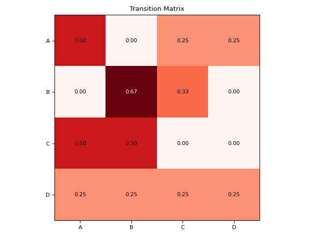

Markov Chains
Contents
Markov Chains#
transition_matrix()#
- transition_matrix(sequence, order=1, adjust=True, show=False)[source]#
Transition Matrix
A Transition Matrix (also known as a stochastic matrix or a Markov matrix) is a convenient way of representing and describing a sequence of (discrete) states, also known as discrete Markov chains. Each of its entries is a probability of transitioning from one state to the other.
- Parameters
sequence (Union[list, np.array, pd.Series]) – A list of discrete states.
show (bool) – Displays the transition matrix heatmap.
- Returns
pd.DataFrame – The empirical (observed) transition matrix.
dict – A dictionnary containing additional information, such as the Frequency Matrix (fm; accessible via the key
"Occurrences"), useful for some tests.
Examples
In [1]: import neurokit2 as nk In [2]: sequence = ["A", "A", "C", "B", "B", "B", "C", "A", "A", "D"] In [3]: tm, _ = nk.transition_matrix(sequence, show=True)
In [4]: tm Out[4]: A B C D A 0.50 0.000000 0.250000 0.25 B 0.00 0.666667 0.333333 0.00 C 0.50 0.500000 0.000000 0.00 D 0.25 0.250000 0.250000 0.25
In this example, the transition from D is unknown (it is the last element), resulting in an absence of transitioning probability. As this can cause issues, unknown probabilities are replaced by a uniform distribution, but this can be turned off using the
adjustargument.In [5]: tm, _ = nk.transition_matrix(sequence, adjust=False) In [6]: tm Out[6]: A B C D A 0.5 0.000000 0.250000 0.25 B 0.0 0.666667 0.333333 0.00 C 0.5 0.500000 0.000000 0.00 D 0.0 0.000000 0.000000 0.00
Transition matrix of higher order
In [7]: sequence = ["A", "A", "A", "B", "A", "A", "B", "A", "A", "B"] In [8]: tm, _ = nk.transition_matrix(sequence, order=2) In [9]: tm Out[9]: array([[[0.25, 0.75], [1. , 0. ]], [[1. , 0. ], [0.5 , 0.5 ]]])
{kind=link}
markov_simulate()#
- markov_simulate(tm, n=10)[source]#
Markov Chain Simulation
Given a
transition_matrix(), this function simulates the corresponding sequence of states (also known as a discrete Markov chain).- Parameters
tm (pd.DataFrame) – A probability matrix obtained from
transition_matrix().n (int) – Length of the simulated sequence.
- Returns
np.ndarray – Sequence of states.
See also
Examples
In [1]: import neurokit2 as nk In [2]: sequence = [0, 0, 1, 2, 2, 2, 1, 0, 0, 3] In [3]: tm, _ = nk.transition_matrix(sequence) In [4]: x = nk.markov_simulate(tm, n=15) In [5]: x Out[5]: array([3, 3, 0, 1, 0, 0, 1, 0, 0, 0, 1, 2, 2, 1, 2])
markov_test_random()#
- markov_test_random(fm)[source]#
Is the Markov process random?
This function computes the expected (theoretical) transition matrix if the order of appearance of each state was governed only by their overall prevalence, and that a previous state had no influence on the next state. This “random” matrix is then compered again the observed one, and a Chi2 test is conducted.
If significant (e.g.,
*p*-value < .05), one can reject the hypothesis that observed Markov process is random, and conclude that past states have an influence on next states.- Parameters
fm (pd.DataFrame) – A frequency matrix obtained from
transition_matrix().- Returns
dict – Contains indices of the Chi2 test.
See also
Examples
In [1]: import neurokit2 as nk In [2]: sequence = [0, 0, 1, 2, 2, 2, 1, 0, 0, 3] In [3]: _, info = nk.transition_matrix(sequence) In [4]: result = nk.markov_test_random(info["Occurrences"]) In [5]: result["Random_p"] Out[5]: 0.8815729751590916
markov_test_symmetry()#
- markov_test_symmetry(fm)[source]#
Is the Markov process symmetric?
Performs a symmetry test, to test if for instance if the transitions A -> B and B -> A occur with the same probability. If significant (e.g.,
*p*-value < .05), one can reject the hypothesis that observed Markov process is symmetric, and conclude that it the transition matrix is asymmetric.- Parameters
fm (pd.DataFrame) – A frequency matrix obtained from
transition_matrix().- Returns
dict – Contains indices of the test.
See also
Examples
In [1]: import neurokit2 as nk In [2]: sequence = [0, 0, 1, 2, 2, 2, 1, 0, 0, 3] In [3]: _, info = nk.transition_matrix(sequence) In [4]: result = nk.markov_test_symmetry(info["Occurrences"]) In [5]: result["Symmetry_p"] Out[5]: 1.0
References
Kullback, S., Kupperman, M., & Ku, H. H. (1962). Tests for contingency tables and Markov chains. Technometrics, 4(4), 573-608.
markov_test_homogeneity()#
- markov_test_homogeneity(sequence, size=10)[source]#
Is the Markov process homogeneous?
Performs a homogeneity test that tests the null hypothesis that the samples are homogeneous, i.e., from the same - but unspecified - population, against the alternative hypothesis that at least one pair of samples is from different populations.
- Parameters
sequence (Union[list, np.array, pd.Series]) – A list of discrete states.
size (int) – The size of the non-overlapping windows to split the sequence.
- Returns
dict – Contains indices of the test.
See also
Examples
In [1]: import neurokit2 as nk In [2]: sequence = [0, 0, 1, 2, 2, 2, 1, 0, 0, 3] In [3]: result = nk.markov_test_homogeneity(sequence, size=2) In [4]: result["Homogeneity_p"] Out[4]: 0.9999999999999952
References
Kullback, S., Kupperman, M., & Ku, H. H. (1962). Tests for contingency tables and Markov chains. Technometrics, 4(4), 573-608.
markov_mixingtime()#
- markov_mixingtime(tm)[source]#
Markov Chain Mixing Time
The Mixing time (also known as relaxation time) is the inverse of spectral gap, which is the difference between the two largest eigenvalues of the transition matrix. The Mixing time of a Markov chain tells us how long does it take for a run to go near the stationary distribution (for convergence to happen).
- Parameters
tm (pd.DataFrame) – A transition matrix obtained from
transition_matrix().- Returns
float – Mixing time of the Markov chain.
See also
Examples
In [1]: import neurokit2 as nk In [2]: sequence = [0, 0, 1, 2, 2, 2, 1, 0, 0, 3] In [3]: tm, _ = nk.transition_matrix(sequence) In [4]: nk.markov_mixingtime(tm) Out[4]: 2.509587003712985
References
Levin, D. A., & Peres, Y. (2017). Markov chains and mixing times (Vol. 107). American Mathematical Society.